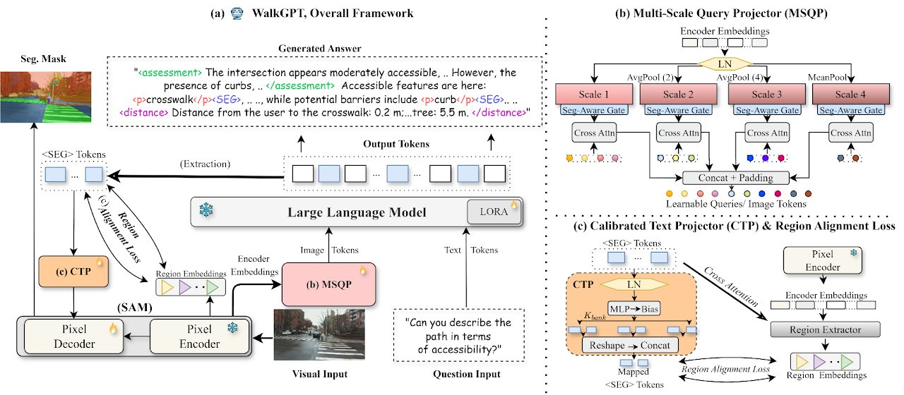
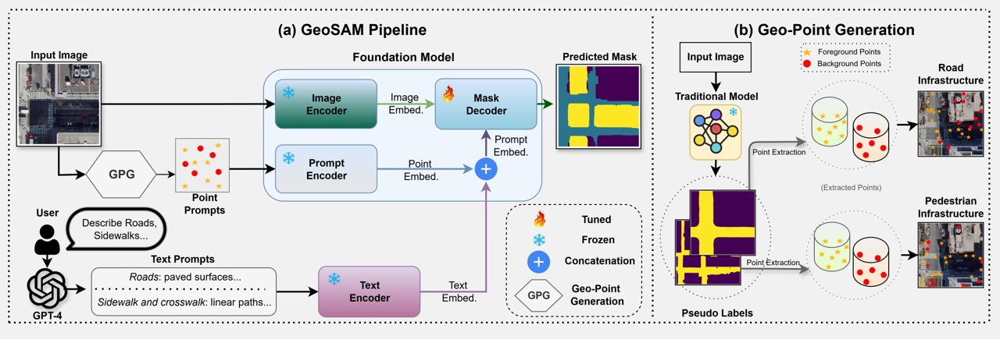
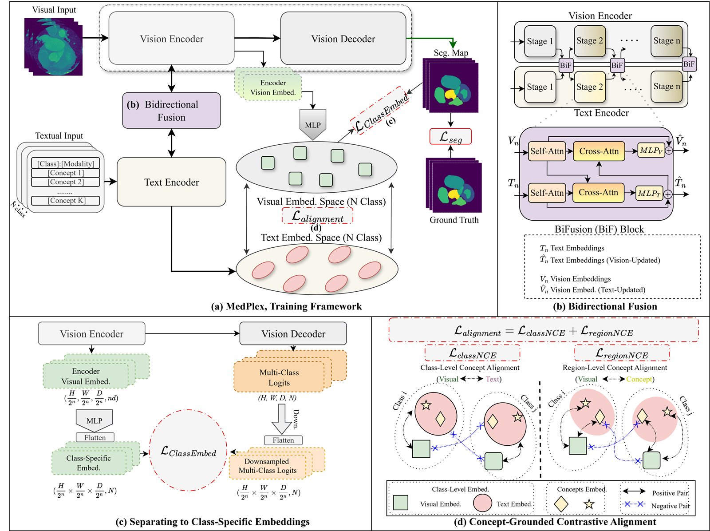
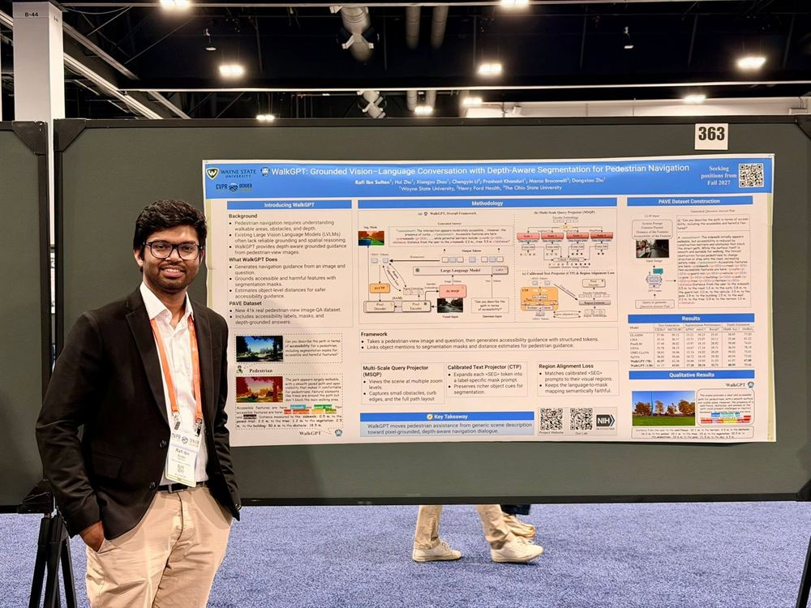
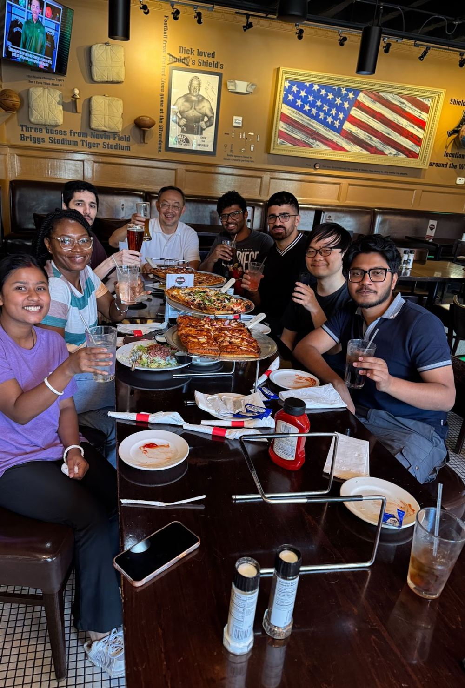
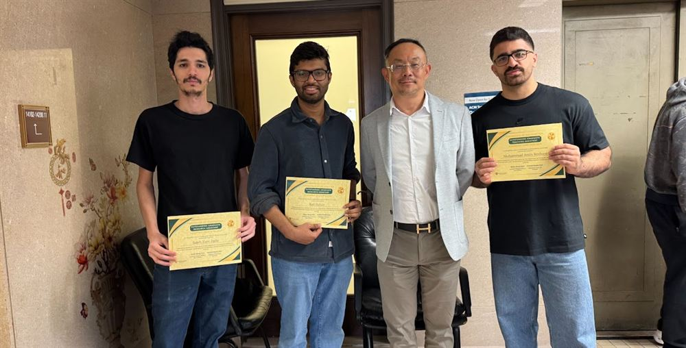
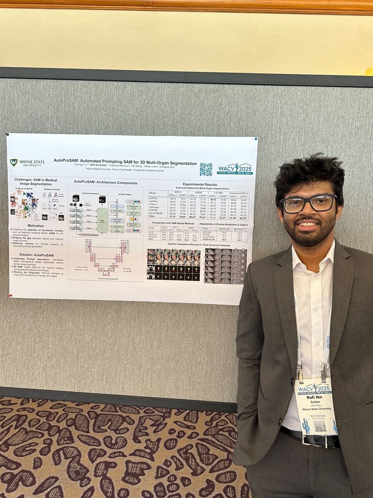
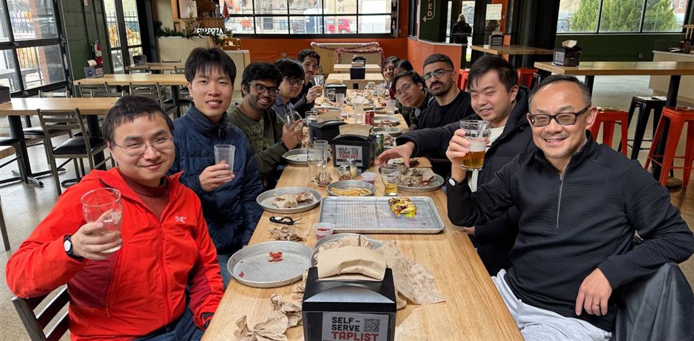
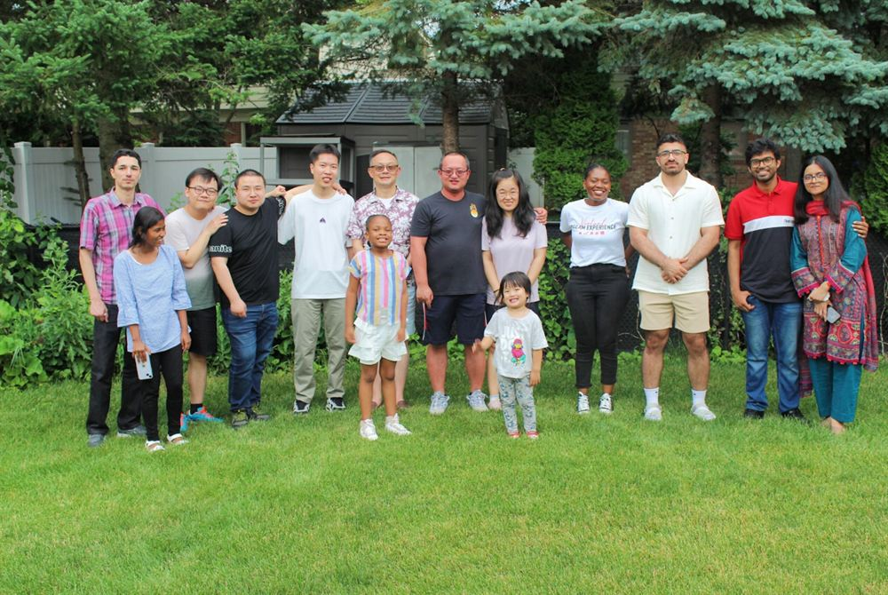

Rafi Ibn Sultan
I build vision–language systems that segment, ground, and reason about the world.
On the academic job market. I'm seeking tenure-track Assistant Professor and Research Scientist positions, starting after I complete my Ph.D. in August 2027. Get in touch — I'd be glad to talk.
I'm a Ph.D. candidate in Computer Science at Wayne State University, working at the intersection of computer vision and multimodal AI. Since joining the Trustworthy AI Lab in 2022, I've worked on vision–language models and segmentation foundation models across medical imaging, mobility infrastructure, and remote sensing.
What I care about most is AI for social good — systems that don't just describe a scene, but reason about it well enough to support real decisions.
What I work on
Grounded Multimodal Reasoning for Accessibility
My most recent work, WalkGPT (CVPR 2026), is a grounded vision–language model for pedestrian navigation and accessibility. It combines segmentation, depth estimation, and language reasoning to identify sidewalks, crosswalks, curb ramps, and accessibility barriers from real-world pedestrian-view imagery, then delivers step-by-step, context-aware guidance as a conversational agent.
Earlier in this line, GeoSAM (ECAI 2025) introduced sparse- and dense-prompt fine-tuning of SAM for large-scale mobility-infrastructure segmentation from aerial and street-level imagery. It has since been adopted as a benchmark in subsequent NeurIPS work.
I'm currently extending this toward stronger spatial reasoning in vision–language models at scale. SpatialCORE (under review) targets spatially confident reasoning in large VLMs — pushing past surface-level description toward predictions that are grounded in visual evidence rather than asserted.
Medical Image Segmentation & Multimodal Learning
I develop foundation-model-based segmentation and VLM-driven fusion methods for CT and MRI analysis. My current work in this line, MedPlex, explores deep vision–language co-adaptation for clinically grounded medical segmentation — building on BiPVL-Seg, which introduced bidirectional progressive alignment of visual features with structured medical text to improve organ and tumor segmentation.
With Henry Ford Hospital, I work on Left Anterior Descending (LAD) artery segmentation using novel encoder–decoder architectures — important for radiotherapy planning, since the LAD is highly sensitive to radiation injury. That work was presented at AAPM 2025 and is forthcoming in Medical Physics.
Technical Skills
- Python
- PyTorch
- Linux
- Git
- LaTeX
- Multi-GPU training
- Vision transformers
- SAM
- Large vision–language models
- LoRA / PEFT
- Contrastive learning
- Segmentation
- Grounding
- Representation learning
- HuggingFace
- MONAI
- OpenCV
- scikit-learn
- Weights & Biases
Selected work
-
CVPR 2026
WalkGPT: Grounded Vision–Language Conversation with Depth-Aware Segmentation for Pedestrian Navigation

-
ECAI 2025

-
Medical Physics 2026
NA-UNETR: A Neighborhood Attention Transformer Network for Enhanced 3D Segmentation of the Left Anterior Descending Artery
![NA-UNETR architecture: a U-shaped encoder–decoder for 3D CT volumes. The encoder runs four stages of overlapping tokenizer and downsampler blocks paired with Res-conv NAT blocks; skip connections carry features through ResBlocks to a decoder that concatenates and deconvolves back to full resolution, ending in a head that outputs the segmented left anterior descending artery. A side panel details the NAT block as layer norm, neighborhood attention or dilated neighborhood attention, and MLP with residual connections.](img/papers/na-unetr.jpg)
-
Under Review
MedPlex: Deep Vision-Language Co-Adaptation for Clinically Grounded Medical Segmentation

All Peer-Reviewed Publications
-
WalkGPT: Grounded Vision–Language Conversation with Depth-Aware Segmentation for Pedestrian NavigationCVPR · 2026
-
NA-UNETR: A Neighborhood Attention Transformer Network for Enhanced 3D Segmentation of the Left Anterior Descending ArteryMedical Physics · 2026
-
On Federated Compositional Optimization: Algorithms, Analysis, and GuaranteesTMLR · 2026
-
FluenceFormer: Transformer-Driven Multi-Beam Fluence Map Regression for Radiotherapy PlanningMIDL · 2026
-
ECAI · 2025
-
Enhancing CT Image Segmentation Accuracy Through Ensemble Loss Function OptimizationMedical Physics · 2025
-
AutoProSAM: Automated Prompting SAM for 3D Multi-Organ SegmentationWACV · 2025
-
MulModSeg: Enhancing Unpaired Multi-Modal Medical Image Segmentation with Modality-Conditioned Text Embedding and Alternating TrainingWACV · 2025
-
Medical Physics · 2023
-
MICCAI · 2023
-
ICAEEE · 2022
-
ICEEICT · 2021
-
ISCAIE · 2021
-
TENCON · 2018
-
ICEEICT · 2018
Preprints & Under Review
-
SpatialCORE: Spatially Confident Reasoning for Large Vision-Language ModelsUnder review · 2026
-
MedPlex: Deep Vision-Language Co-Adaptation for Clinically Grounded Medical SegmentationUnder review · 2026
-
arXiv:2503.23534 · 2025
Full list on Google Scholar.
Talks, coverage & recognition
Awards & Honors
-
Best Graduate Research Award 2025
Conference Reviewing
- NeurIPS 2026
- IJCAI-ECAI 2026
- BMVC 2026
- ECCV
- IJCNN 2025
Journal Reviewing
- Pattern Recognition
- Computer Vision and Image Understanding
- IEEE Transactions on Circuits and Systems for Video Technology
- Knowledge-Based Systems
- Computer Methods and Programs in Biomedicine
- Computers in Biology and Medicine
- Biomedical Signal Processing and Control
- Results in Engineering
- Expert Systems with Applications
- IEEE Transactions on Medical Imaging
Recent updates
- Aug 4, 2026 Our paper with Henry Ford Hospital, "A Neighborhood Attention Transformer Network for Enhanced 3D Segmentation of the Left Anterior Descending Artery," has been accepted to Medical Physics.
- Feb 20, 2026 WalkGPT has been accepted to CVPR 2026.
- Feb 6, 2026 I will serve on the Program Committee for IJCAI 2026.
- Jan 27, 2026 I was invited as a guest graduate speaker in the Computer Science Department at Wayne State University, presenting "From Mobility Infrastructure Segmentation to Pedestrian Guidance: A Multimodal AI Perspective."
- Jul 11, 2025 GeoSAM has been accepted to the 28th European Conference on Artificial Intelligence (ECAI 2025) in Bologna, Italy.
- May 16, 2025 Invited to review for Pattern Recognition — a third invitation from a Q1 journal, following Biomedical Signal Processing and Control and Computer Vision and Image Understanding.
- Apr 25, 2025 Our work NA-UNETR was presented as a poster at AAPM 2025.
- Apr 16, 2025 Received the Best Graduate Research Award from the Department of Computer Science at Wayne State University.
- Apr 1, 2025 BiPVL-Seg, our multimodal segmentation model, is now on arXiv.
- Feb 27, 2025 Attended and presented AutoProSAM at WACV 2025. Watch the presentation.
- Feb 11, 2025 Invited to serve as a reviewer for IJCNN 2025.
- Oct 28, 2024 Two of our papers were accepted to WACV 2025.
- Apr 3, 2024 Our lab and GeoSAM were featured on Detroit PBS. Watch the segment.
- Mar 7, 2024 I passed my PhD qualifying exam and am now a PhD Candidate. Read the report.
Where I've worked
-
Graduate Research Assistant Sep 2023 — Present
- Lead independent research on grounded vision–language models for spatial reasoning, pedestrian navigation, and medical image segmentation — from problem formulation through publication, resulting in first-author papers at CVPR and ECAI.
- Drive an ongoing clinical collaboration with Henry Ford Hospital on coronary CT segmentation, translating clinician requirements into model design and working directly with radiology partners on data, evaluation, and deployment-relevant validation.
- Mentor junior Ph.D. students on research methodology, experimental design, and paper writing.
-
Graduate Teaching Assistant Aug 2022 — Aug 2023
- Led Software Engineering labs, supervising 5–6 project teams of 4–5 students each per term through the full development lifecycle, from requirements to delivery.
-
Lecturer Oct 2019 — Aug 2022
- Sole instructor for undergraduate courses including Microprocessor and Assembly Language, Object-Oriented Programming, and Computer Fundamentals — 30–40 students per course.
- Supervised roughly 8 undergraduate final-year thesis and capstone projects from proposal to defense.
Education
-
Ph.D. in Computer Science Sep 2022 — Expected Aug 2027
-
M.Sc. in Computer Science Dec 2025
-
B.Sc. in Computer Science & Engineering 2014 — 2018
-
Higher Secondary School Certificate 2013
-
Secondary School Certificate 2011
Outside the lab
- Football — a lifelong Real Madrid loyalist, and I'll defend Cristiano Ronaldo in any argument
- Anime — always mid-series, always open to recommendations
- Camping — weekends under canvas whenever the season allows
- Hiking — trails are where I do my best thinking
- Gaming — FIFA since '98, a Killjoy main in Valorant, and new to CS2
- Movies & series — a reliable way to lose an evening
- Beginner acoustic guitarist
- Travel — working toward all 50 states
Conferences & Lab Life





